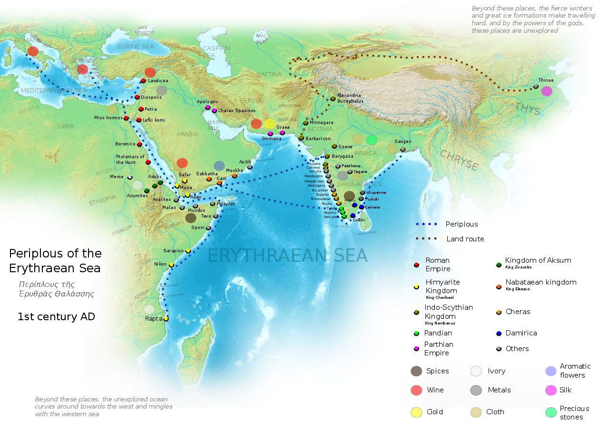

Ancient India's rich tapestry of culture, philosophy, and learning has long fascinated scholars and travellers from distant lands. Among the many who embarked on this journey were renowned travelers such as Fa-Hien, Hiuen Tsang, and Al-Biruni, whose chronicles offer invaluable insights into ancient Indian society, culture, and religious practices. The motivations behind the journeys of these ancient and medieval travellers were multifaceted, reflecting India's profound impact on the global cultural, spiritual, intellectual, and economic landscape. Their travels enriched their lives and societies and contributed to a greater global understanding of India's rich heritage and enduring legacy. Here are some of the primary motivations:
Trade and Commerce:
India was known for its wealth and resources, including spices, textiles, and precious stones. Traders from regions like Greece, Rome, Persia, and China traveled to India to engage in commerce and establish trade routes.
Figures like Marco Polo and Jean-Baptiste Tavernier were attracted by India's lucrative trade opportunities and the splendor of its royal courts.
India was also a central hub in ancient trade networks, including the Silk Road and maritime routes, facilitating the exchange of goods, ideas, and cultures between the East and the West.
Religious Pilgrimages:
India was the birthplace of Buddhism and Hinduism, two of the world's major religions. India's numerous sacred sites, such as Bodh Gaya, Sarnath, and Varanasi, were important destinations for religious pilgrims seeking to deepen their spiritual practice and understanding.Buddhist monks like Fa-Hien and Hiuen Tsang traveled to India primarily to visit sacred Buddhist sites, study religious texts, and gain spiritual enlightenment. The country's numerous monasteries, including the renowned Nalanda University, served as centres of religious learning and attracted scholars from across Asia.
Education and Knowledge:
Ancient India was considered as Centre of Learning, home to some of the world's earliest and most prestigious universities, such as Nalanda and Takshashila, which offered advanced studies in a wide range of subjects, including philosophy, medicine, mathematics, and astronomy. Scholars like Al-Biruni came to India to engage with its rich intellectual traditions and to translate and study Indian scientific and philosophical texts. Scientific and Mathematical Knowledge: India's contributions to mathematics (such as the concept of zero), astronomy, and medicine were highly regarded. Scholars and polymaths visited India to learn from its advancements and to integrate this knowledge into their own cultures.
Cultural Exchange:
The immense cultural diversity of India, with its multitude of languages, customs, and traditions, fascinated anthropologists and cultural explorers. They sought to document and understand the various facets of Indian society, from its urban centres to rural villages. The architectural marvels of India, including temples, palaces, and monuments, attracted travellers interested in art and architecture. The detailed descriptions by travellers like Tavernier provide a glimpse into the artistic achievements of different Indian dynasties.
India was an important cross road for trade and cultural exchange in ancient time due to its location between East and West.Some of major routes in ancient time of india which helped ancient India to spread it's culture , education and trades throughout the world.The main factors which attracted people towards ancient india was..
Varied topography: India’s diverse topography, including the Himalayan mountains in the north and the fertile Gangetic plains, significantly shaped settlement patterns and agriculture.
The Gangetic plains, for instance, fostered early agricultural civilizations like the Vedic civilization.
Simultaneously, the Himalayas acted as both a climatic barrier, retaining monsoon rains for civilizations like Magadha and the Mauryan Empire, and a natural defense against invasions from Central Asia, fostering geographical isolation and providing a protective cocoon for the Indian subcontinent.
River systems: India’s major rivers, such as the Ganges and the Indus, provided a lifeline for early civilizations. They not only served as sources of water for agriculture but also as trade routes, promoting commerce and cultural exchange.
g. role of the Indus River in supporting trade during the Indus Valley civilization.
Natural resources: The geographical diversity of India endowed it with abundant natural resources, including minerals, forests, and wildlife. These resources contributed to the development of crafts, metallurgy, and trade.
g. Development of the metallurgy industry during the Chola period.

Trade and connectivity: India’s strategic location at the crossroads of trade routes facilitated commerce with other ancient civilizations, such as Mesopotamia and China.
The Silk Road, for example, passed through India, connecting it to the rest of the world.The Spice Route was a way of maritime trade.
The Salt Route, Incense Route, Tin Route, and The Amber Road are few more examples of trade in Ancient India.
Developed road system(Uttarapatha & Dakshinapatha): Uttarapatha was connecting East and South Asia with Central Asia and beyond to Central Europe. Uttarapatha was the historical east-west super highway of India. Spanning from Gandhara (present day Kandahar, Afghanistan) in the farthest North West, this highway went all the way through Takshashila, Lahore, Amritsar, Delhi, Kannauj, Prayag, Varanasi, Nalanda, Pataliputra and ended at the port of Tamralipta on the Gangetic delta in the Bay of Bengal.
Dakshinapatha was the historical north-south super highway. Starting from Shravasti, in the Himalayan foothill the Dakshinapatha wound its way through Varanasi, Prayag, Chitrakoot, Ujjain and ended at Pratishthana (present day Paithan), with further connecting roads to the Tamil country of the Cholas, Cheras and the Pandyas.
Coastline: India’s extensive coastline along the Arabian Sea and the Bay of Bengal facilitated maritime trade. Coastal cities like Muziris and Arikamedu became pivotal trading hubs, some even evolving into capital cities.
This maritime trade contributed to the flourishing of empires such as the Satavahanas, Cholas, and Pallavas.
India’s sacred geography, including its rivers, mountains, and forests, held profound spiritual significance. The Ganges River, the Himalayas, and revered places like Varanasi influenced religious beliefs and practices.